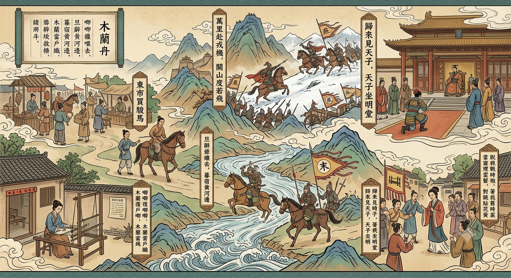

<!DOCTYPE html>
<html lang="zh-TW">
<head>
    <meta charset="UTF-8">
    <meta name="viewport" content="width=device-width, initial-scale=1.0">
    <title>木蘭詩：大地圖闖關</title>
    <!-- 引入 Tailwind CSS 來處理排版與美化 -->
    <script src="https://cdn.tailwindcss.com"></script>
    <!-- 引入 React 核心庫 -->
    <script crossorigin src="https://unpkg.com/react@18/umd/react.production.min.js"></script>
    <script crossorigin src="https://unpkg.com/react-dom@18/umd/react-dom.production.min.js"></script>
    <!-- 引入 Babel 來讓瀏覽器看得懂 JSX 語法 -->
    <script src="https://unpkg.com/@babel/standalone/babel.min.js"></script>
    <style>
        body { margin: 0; padding: 0; background-color: #f5f5f4; font-family: 'PingFang TC', 'Microsoft JhengHei', sans-serif; }
        .hide-scrollbar::-webkit-scrollbar { display: none; }
        .hide-scrollbar { -ms-overflow-style: none; scrollbar-width: none; }
        
        /* 角色棋子樣式：圓形裁切與光影 */
        .player-token {
            transition: all 0.8s ease-in-out;
            box-shadow: 0 4px 10px rgba(0,0,0,0.5), 0 0 0 3px #fbbf24;
            border-radius: 50%;
            overflow: hidden;
            background-color: #4b5563; /* 載入前底色 */
        }
        
        /* 關卡節點閃爍動畫 */
        @keyframes pulse-ring {
            0% { transform: scale(0.8); box-shadow: 0 0 0 0 rgba(245, 158, 11, 0.7); }
            70% { transform: scale(1); box-shadow: 0 0 0 15px rgba(245, 158, 11, 0); }
            100% { transform: scale(0.8); box-shadow: 0 0 0 0 rgba(245, 158, 11, 0); }
        }
        .poi-marker {
            animation: pulse-ring 2s infinite;
        }
    </style>
</head>
<body>
    <div id="root"></div>

    <script type="text/babel">
        const { useState, useEffect } = React;

        // --- 關卡與題庫資料 (對應大地圖位置) ---
        const POI_DATA = [
            {
                id: 'home', name: '木蘭當戶織',
                x: 12, y: 75, // 在地圖上的百分比位置 (左下角)
                cleared: false,
                q: "「阿爺無大兒，木蘭無長兄」這句話交代了什麼情節？",
                options: ["A. 木蘭家境貧困，需要賺錢", "B. 木蘭代父從軍的無奈與原因", "C. 木蘭的武藝比男性還高強"],
                ans: 1,
                explanation: "因為父親沒有大兒子，木蘭也沒有哥哥能代替年邁的父親出征，才促使木蘭決定代父從軍。"
            },
            {
                id: 'market', name: '東市買駿馬',
                x: 23, y: 35, // 左上角
                cleared: false,
                q: "「東市買駿馬，西市買鞍韉，南市買轡頭，北市買長鞭」使用了什麼修辭？",
                options: ["A. 排比與鑲嵌", "B. 譬喻與誇飾", "C. 擬人與頂真"],
                ans: 0,
                explanation: "連用四個結構相似的句子為排比，並將東、西、南、北等方位詞鑲嵌其中，營造出市集奔波的忙碌感。"
            },
            {
                id: 'river', name: '暮宿黃河邊',
                x: 50, y: 75, // 中下方
                cleared: false,
                q: "「不聞爺孃喚女聲，但聞黃河流水鳴濺濺」主要表達了木蘭什麼情感？",
                options: ["A. 欣賞黃河壯麗的風景", "B. 離鄉背井的孤獨與對家人的思念", "C. 害怕戰場上的敵人"],
                ans: 1,
                explanation: "透過聽不見父母的呼喚聲，只聽見黃河水聲，烘托出木蘭離家後孤單、思鄉的情懷。"
            },
            {
                id: 'yanshan', name: '關山度若飛',
                x: 57, y: 28, // 中上方
                cleared: false,
                q: "「朔氣傳金柝，寒光照鐵衣」主要描寫什麼情境？",
                options: ["A. 戰場氣候嚴寒，軍旅生活艱苦", "B. 將士們在月光下磨練兵器", "C. 敵軍趁著黑夜發動突襲"],
                ans: 0,
                explanation: "「朔」指北方，「朔氣」為北方的寒氣。描寫北方戰地氣候嚴寒，將士們穿著冰冷的鐵甲，生活艱難。"
            },
            {
                id: 'court', name: '天子坐明堂',
                x: 85, y: 35, // 右上方
                cleared: false,
                q: "「策勳十二轉，賞賜百千強」中的「十二轉」表示什麼意思？",
                options: ["A. 確切的十二次獎賞", "B. 轉了十二個地區作戰", "C. 虛數，形容軍功極高、升遷極多"],
                ans: 2,
                explanation: "在古文中，數字如三、九、十二常作虛數。「十二轉」用來形容木蘭戰功彪炳，獲得了極高的勳級。"
            },
            {
                id: 'return', name: '著我舊時裳',
                x: 88, y: 78, // 右下方
                cleared: false,
                q: "「同行十二年，不知木蘭是女郎」展現了木蘭的什麼特質？",
                options: ["A. 謹慎機警，成功隱藏身分", "B. 喜歡穿著男裝", "C. 戰友們都不關心她"],
                ans: 0,
                explanation: "能在軍中生活十二年卻不被發現女兒身，足見木蘭的機智、謹慎與刻苦。"
            }
        ];

        function MulanGame() {
            const [gameState, setGameState] = useState('title'); // title, playing, won
            const [pois, setPois] = useState(POI_DATA);
            // 玩家初始位置 (稍微偏離第一個點，營造出場感)
            const [playerPos, setPlayerPos] = useState({ x: 5, y: 85 }); 
            const [activePoi, setActivePoi] = useState(null);
            const [feedback, setFeedback] = useState(null);

            // 計算遊戲進度
            const clearedCount = pois.filter(p => p.cleared).length;
            const totalCount = pois.length;

            const startGame = () => {
                setGameState('playing');
                // 遊戲開始，自動走向第一個點 (家)
                setTimeout(() => handlePoiClick(pois[0]), 500);
            };

            const handlePoiClick = (poi) => {
                if (gameState !== 'playing') return;

                // 1. 移動棋子
                setPlayerPos({ x: poi.x, y: poi.y });
                
                // 2. 等待動畫完成後，如果該關卡尚未通關，則彈出題目
                setTimeout(() => {
                    if (!poi.cleared) {
                        setActivePoi(poi);
                        setFeedback(null);
                    }
                }, 800); // 800ms 與 CSS transition 時間一致
            };

            const handleAnswer = (selectedIndex) => {
                if (selectedIndex === activePoi.ans) {
                    // 答對了
                    setFeedback({ 
                        isCorrect: true, 
                        msg: `【正確！】${activePoi.explanation}` 
                    });
                    
                    // 更新關卡狀態
                    const updatedPois = pois.map(p => 
                        p.id === activePoi.id ? { ...p, cleared: true } : p
                    );
                    setPois(updatedPois);

                    // 檢查是否全破
                    if (updatedPois.every(p => p.cleared)) {
                        setTimeout(() => {
                            setActivePoi(null);
                            setGameState('won');
                        }, 2500);
                    } else {
                        // 2.5秒後自動關閉視窗
                        setTimeout(() => {
                            setActivePoi(null);
                        }, 2500);
                    }
                } else {
                    // 答錯了
                    setFeedback({ 
                        isCorrect: false, 
                        msg: "【答錯了】將軍請再思考一下！" 
                    });
                }
            };

            // --- 畫面渲染 ---

            // 1. 標題畫面
            if (gameState === 'title') {
                return (
                    <div className="min-h-screen bg-stone-800 flex items-center justify-center p-4 relative" style={{ backgroundImage: 'url(場景.png)', backgroundSize: 'cover', backgroundPosition: 'center' }}>
                        <div className="absolute inset-0 bg-black/60 backdrop-blur-sm"></div>
                        <div className="relative z-10 max-w-2xl text-center bg-amber-50/90 p-10 rounded-xl shadow-2xl border-4 border-amber-800">
                            <h1 className="text-5xl font-bold mb-4 text-amber-900 tracking-widest">木蘭詩<br/><span className="text-3xl text-amber-700 mt-2 block">大地圖闖關</span></h1>
                            <p className="mb-8 text-stone-700 text-lg leading-relaxed font-bold">
                                點擊地圖上的發光節點，<br/>跟隨木蘭的腳步，完成從出征到還鄉的史詩旅程！
                            </p>
                            <button 
                                onClick={startGame}
                                className="bg-amber-700 hover:bg-amber-600 text-white px-8 py-3 rounded-full text-xl font-bold transition-all transform hover:scale-105 shadow-lg mx-auto"
                            >
                                開始旅程
                            </button>
                        </div>
                    </div>
                );
            }

            // 2. 破關畫面
            if (gameState === 'won') {
                return (
                    <div className="min-h-screen bg-stone-800 flex items-center justify-center p-4 relative" style={{ backgroundImage: 'url(場景.png)', backgroundSize: 'cover', backgroundPosition: 'center' }}>
                        <div className="absolute inset-0 bg-black/60 backdrop-blur-sm"></div>
                        <div className="relative z-10 max-w-2xl text-center bg-amber-50/95 p-10 rounded-xl shadow-2xl border-4 border-amber-800">
                            <div className="text-6xl mb-4">📜🏆</div>
                            <h1 className="text-4xl font-bold mb-4 text-amber-900">旅程圓滿結束！</h1>
                            <p className="mb-8 text-stone-700 text-lg leading-relaxed font-bold">
                                「出門看火伴，火伴皆驚忙：同行十二年，不知木蘭是女郎。」<br/>
                                恭喜你陪伴木蘭走完這段傳奇，並完全掌握了《木蘭詩》的精髓！
                            </p>
                            <button 
                                onClick={() => window.location.reload()}
                                className="bg-amber-700 hover:bg-amber-600 text-white px-8 py-3 rounded-full text-xl font-bold transition-all transform hover:scale-105 shadow-lg mx-auto"
                            >
                                再玩一次
                            </button>
                        </div>
                    </div>
                );
            }

            // 3. 遊戲主畫面 (大地圖)
            return (
                <div className="min-h-screen bg-stone-900 flex flex-col items-center justify-start text-stone-800">
                    
                    {/* 頂部進度條 (HUD) */}
                    <div className="w-full bg-amber-900 text-amber-50 p-3 shadow-md z-20 flex justify-between items-center px-6">
                        <h2 className="text-xl font-bold tracking-widest">木蘭詩：大地圖闖關</h2>
                        <div className="font-bold text-lg bg-amber-800 px-4 py-1 rounded-full border border-amber-600">
                            闖關進度：{clearedCount} / {totalCount}
                        </div>
                    </div>

                    {/* 地圖容器 */}
                    <div className="w-full max-w-6xl relative mt-4 shadow-2xl border-4 border-amber-800 rounded-lg overflow-hidden bg-stone-300">
                        {/* 背景圖：長卷場景 */}
                        
                        
                        {/* 渲染所有關卡節點 (POIs) */}
                        {pois.map((poi, idx) => (
                            <div 
                                key={poi.id}
                                onClick={() => handlePoiClick(poi)}
                                className="absolute cursor-pointer transform -translate-x-1/2 -translate-y-1/2 z-10 flex flex-col items-center group"
                                style={{ left: `${poi.x}%`, top: `${poi.y}%` }}
                            >
                                {/* 節點標記 */}
                                <div className={`w-6 h-6 rounded-full border-2 ${poi.cleared ? 'bg-green-500 border-white' : 'bg-amber-500 border-white poi-marker'}`}></div>
                                
                                {/* 節點名稱標籤 */}
                                <div className={`mt-2 px-2 py-1 text-xs md:text-sm font-bold rounded shadow-md transition-opacity duration-300 whitespace-nowrap
                                    ${poi.cleared ? 'bg-green-800/80 text-white' : 'bg-amber-50/90 text-amber-900 border border-amber-800 opacity-0 group-hover:opacity-100'}`}>
                                    {poi.name}
                                </div>
                            </div>
                        ))}

                        {/* 玩家角色棋子 (木蘭) */}
                        <div 
                            className="absolute z-20 transform -translate-x-1/2 -translate-y-[80%] player-token flex items-center justify-center bg-amber-100"
                            style={{ 
                                left: `${playerPos.x}%`, 
                                top: `${playerPos.y}%`,
                                width: '6vw',  /* 響應式大小 */
                                height: '6vw',
                                minWidth: '45px',
                                minHeight: '45px',
                                maxWidth: '80px',
                                maxHeight: '80px'
                            }}
                        >
                            
                        </div>
                    </div>

                    {/* 操作提示 */}
                    <p className="mt-4 text-stone-400">💡 提示：點擊地圖上的黃色閃爍節點進行探索與闖關。</p>

                    {/* 題目彈出視窗 (Modal) */}
                    {activePoi && (
                        <div className="fixed inset-0 bg-black/70 z-50 flex items-center justify-center p-4 backdrop-blur-sm">
                            <div className="w-full max-w-lg bg-amber-50 p-6 md:p-8 rounded-xl shadow-2xl border-4 border-amber-800 transform transition-all">
                                <div className="flex justify-between items-center mb-4 border-b-2 border-amber-200 pb-3">
                                    <h3 className="text-2xl font-bold text-amber-900">📍 {activePoi.name}</h3>
                                    <button onClick={() => setActivePoi(null)} className="text-stone-400 hover:text-red-500 font-bold text-xl">&times;</button>
                                </div>
                                
                                <p className="text-lg md:text-xl mb-6 font-bold text-stone-800 leading-relaxed">
                                    {activePoi.q}
                                </p>
                                
                                <div className="space-y-3 mb-6">
                                    {activePoi.options.map((opt, i) => (
                                        <button
                                            key={i}
                                            disabled={feedback && feedback.isCorrect}
                                            onClick={() => handleAnswer(i)}
                                            className="w-full text-left p-4 rounded-lg bg-white hover:bg-amber-100 border-2 border-stone-300 hover:border-amber-500 transition-colors text-stone-700 font-bold shadow-sm"
                                        >
                                            {opt}
                                        </button>
                                    ))}
                                </div>

                                {/* 回饋訊息區域 */}
                                {feedback && (
                                    <div className={`p-4 rounded-lg font-bold ${feedback.isCorrect ? 'bg-green-100 text-green-800 border border-green-300' : 'bg-red-100 text-red-800 border border-red-300'}`}>
                                        {feedback.msg}
                                    </div>
                                )}
                            </div>
                        </div>
                    )}

                </div>
            );
        }

        // 渲染到根節點
        const root = ReactDOM.createRoot(document.getElementById('root'));
        root.render(<MulanGame />);
    </script>
</body>
</html>